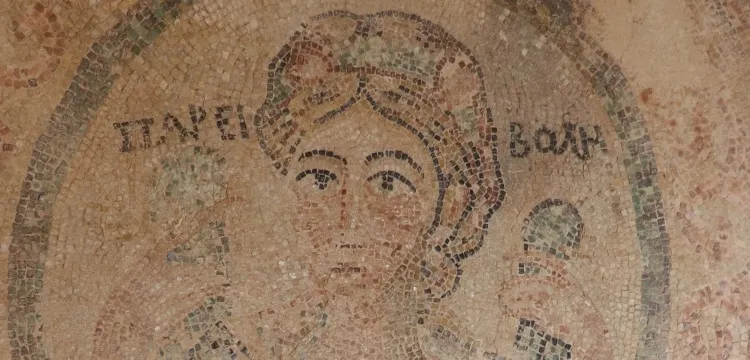

Priapos Figürü
Yuvarlak dalga motifli madalyon içerisinde, siyah ve yeşil renkli dendanların oluşturduğu diş motifli yuvarlak çerçeve içerisinde: gövdenin üst yarısı cepheden, başı ise 3⁄4 cepheden tasvir Priapos betimlemesi bulunur. Alnının üzerinden ortadan ikiye ayrılmış kızıl saçlı, omzuna kadar uzanan kısa, küt saçlıdır. Sol kulağında tek incili küpe, hafif uzun yüzlü, sivri çeneli, yüz hatlarına sahiptir. Zengin taşlarla süslü bir başı, ince uzun boyunlu olarak tasvir edilmiştir. Yay kaşlar içerisinde yukarı kalkık gözlüdür. Çene hizasına kadar kaldırdığı iki elinin parmakları arasında bol dökümlü/kıvrımlı yeşil renkli bir pelerin bulunmaktadır. İki eliyle yukarı kaldırdığı (çıkın) pelerinin içerisinde elma, nar, armut, kiraz vb. meyvelerle doldurulmuş şekilde tasvir edilmiştir. Yukarı kalkık iki ellerinin arasında yuvarlak olarak toparlanmış pelerinin uçları ile zeytin dalını tutmaktadır. Başının iki yanında Grekçe “ПAPEM-BO ꓥ H” yazısı bulunur. Antik dönem mitlerine göre Tanrı Priapos Tanrıça. Aphrodit ile tanrı. Dionysos oğludur. Başka bir mite göre de Adonis ile. Aphrodit’in oğludur. Antik mitleri aşk ve güzellik tanrıçası Aphrodit’in oğlu olduğunu doğrular. Tanrı, Priapos, meyve bağları ve bahçelerini nazara veya kem gözlere karşı koruduğuna inanılırdı. Bu yüzden taban mozaiğinde olduğu gibi iki eli ile yukarıya kaldırarak tuttuğu pelerini içerisinde meyve dolu olarak tasvir edilmiştir. Buruşuk giysili kumaşının içerisinde verimliliği simgeleyen meyveler taşımaktadır. Verimliliğin tanrısı olan Priapos un atributu olarak her şeyden evvel ilk dikkat çeken meyvelerdir. Meyveler özellikle buruşuk kumaştan giysi üzerine tasvir edilmiştir. Bazen elin elma, üç başak, defne yaprağı, hurma ve üzüm salkımı tutmaktadır. Küçükbaş hayvanların, bahçelerinin koruyucusu, O her şeyden evvel bir tarım tanrısıdır. Tarlaların yanında. O’na ormanlar ve bağlar emanet edilmiş, fakat her şeyden önce bahçeler emanet edilmiştir. Bunların yanı sıra binalar ve kutsal alanlarda O’na emanet edilmiştir. Priapos’un hayvan, bitki ve insanlar için bereket bolluğu getirmiş olduğuna ve onların hırsızlara, kötü hava şartlarına ve kötülüklerden koruduğuna inanılmıştır.